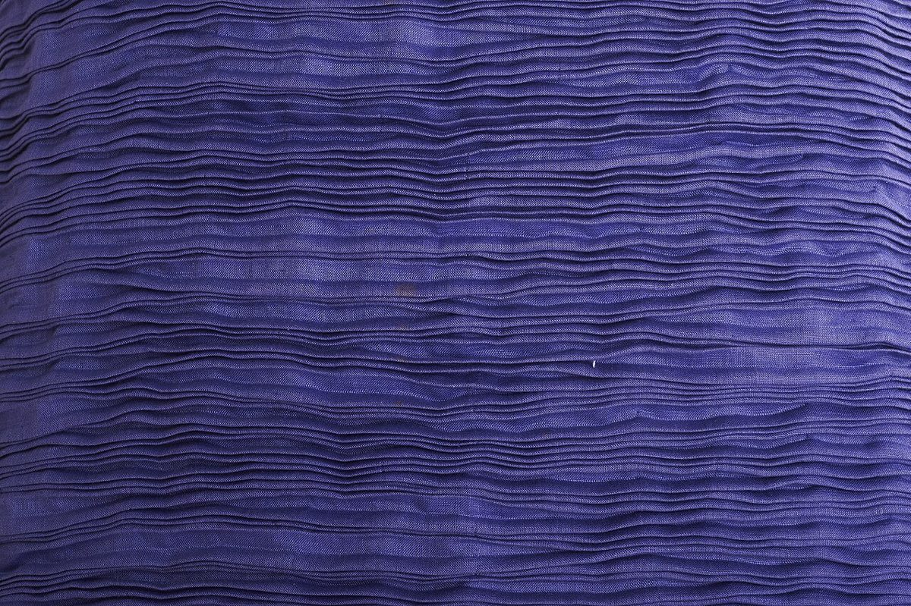
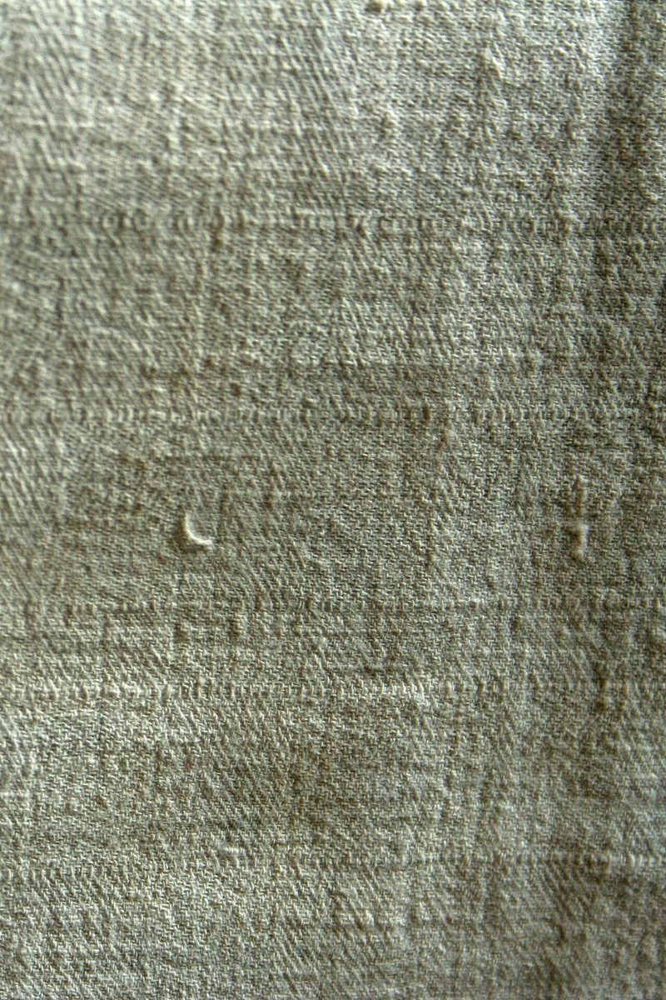

朔月
sakugetsu — kiryu
月のない夜にも、
月のない夜にも、
織り目はひかる。
群馬県桐生市宮本町の小売店「さくげつ」です。織物の街・桐生の空気のなかで、静かに営む一軒のお店として、ここにご案内を置いています。
お問い合わせはお電話か Instagram で。
0277-47-6830


群馬県桐生市宮本町の小売店「さくげつ」です。織物の街・桐生の空気のなかで、静かに営む一軒のお店として、ここにご案内を置いています。
お問い合わせはお電話か Instagram で。
0277-47-6830
「朔月(さくげつ)」は、新月を意味する言葉です。月が見えなくなる夜は、同時に、次の満ちはじめの夜でもあります。
桐生は古くから織物で知られてきた街。縦糸と横糸が一本ずつ重なって布になるように、ひとつずつ丁寧に。そんな語感をこのサイトのデザインに重ねました。
※屋号の由来についてのお店の公式な説明ではなく、制作側の見立てです。本番ではお店の言葉に差し替えます。
以下はサイトの雰囲気を伝えるための布地の写真です。実際の取扱品とは関係ありません(取扱品は準備中です)。横にスクロールしてご覧ください。
藍
生成り写真はフリー素材(国外・撮影地不明を含む)のイメージです。